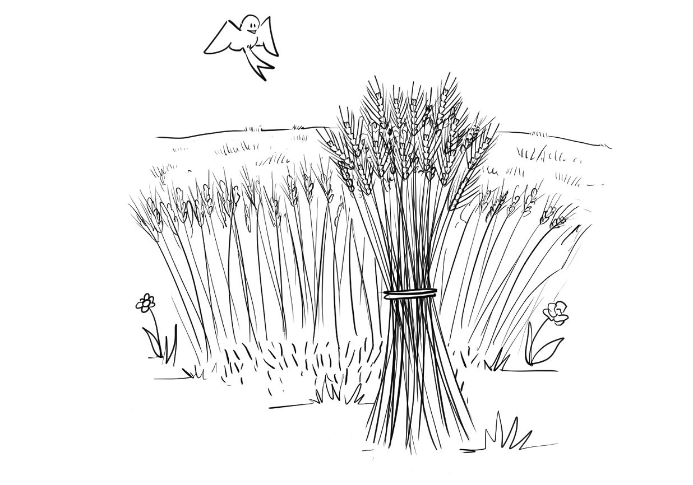
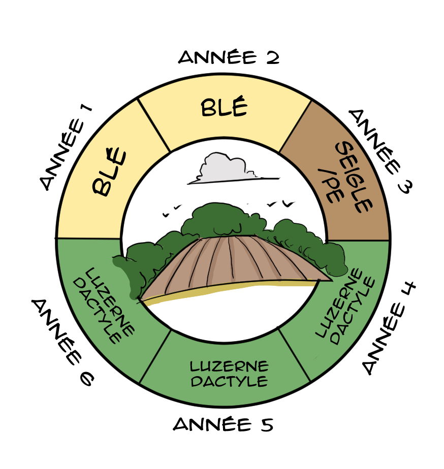
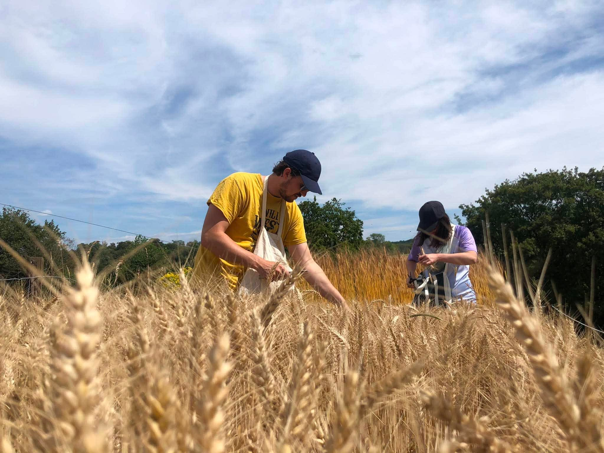
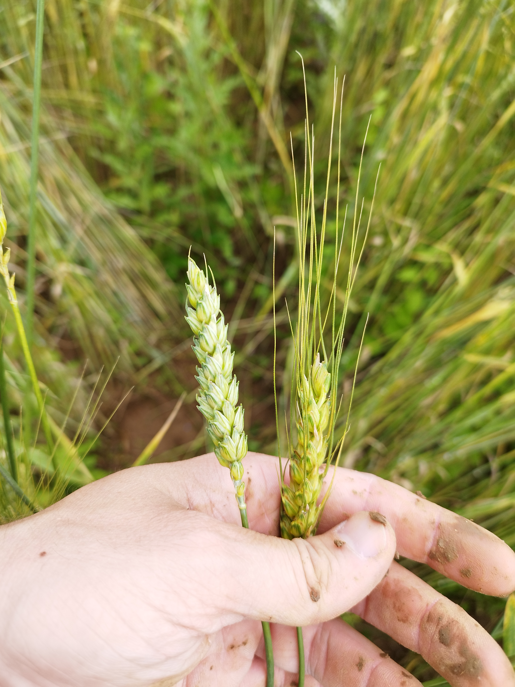
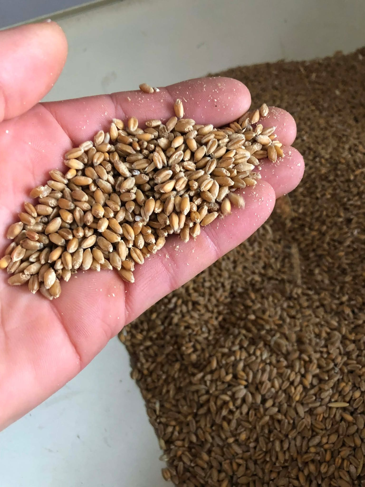

La boulangerie-paysanne : démarche où l'artisan maîtrise toute la chaîne de production, depuis les semis de céréales, en passant par la production de sa farine et de son pain, jusqu'à la vente des de ses produits.
La culture céréalière 🌾
Les céréales cultivées sur les 15 hectares de la ferme sont le blé tendre (ou froment), le seigle et le petit épeautre. Dans une démarche agroécologique, les cultures sont organisées en rotation sur 6 ans.
Après 2 années de culture de blé et une année de culture seigle (ou petit épeautre), 3 années consécutives de luzerne/dactyle permettent de régénérer le sol. Ces dernières sont aussi excellentes pour l'alimentation des vaches, qui viendront fertiliser le terrain en échange.
| Année | Culture | Rôle agronomique |
|---|---|---|
| 1 et 2 | Blé | Culture principale cultivée sur 2 années pour les besoins de la boulangerie. |
| 3 | Seigle (ou petit épeautre) | Une année de culture avant le retour de la prairie. |
| 4 à 6 | Luzerne / Dactyle | 3 années consécutives pour régénérer le sol et nourrir les vaches (qui fertilisent en échange). |

Le blé population 🌱
Les céréales de différentes variétés, produites et re-semées chaque année, s'adaptent au terroir et forment ce qu'on appelle un blé population. Le rendement est d'environ 3,5 T/ha, ce qui est relativement faible mais qui est compensé par une grande résistance aux maladies, sécheresses, etc...
Un premier test sur une mini parcelle a été mené cette année qui s'est révélé très concluant. Nos premiers grains sont prêts à être analysés afin de connaître leur qualité.
La meunerie ⚙️
Une fois récoltées et stockées, les céréales alimentent la meunerie (ou minoterie) pour les besoins en farine de la boulangerie.
Les grains passent par une trieuse, qui écarte les grains non conforme et les résidus de récolte. Ensuite, la brosse à blé permet d'enlever les poussières de la surface des grains.
Gravitairement, le grain est enfin conduit dans le moulin. Ce dernier, de type Astrier, déroule le grain entre deux meules de pierre qui broyent le son (enveloppe extérieure) et l'albumen (la farine). En sortie, un tamis rotatif sépare la farine blanche du son. Plus le tamis est fin, mieux la farine est séparée du son et est blanche (T45, T65,...). A contrario, plus le tamis a des mailles larges, plus le son sera mélangé à la farine et formera une farine plus complète (T80, T110, T130,...).
Le moulin de la ferme, de diamètre 50, a un rendement de 15 kg/h et un taux d'extraction (farine/son) de 80%.
La farine produite est stockée une semaine avant son utilisation à la boulangerie. On dit qu'elle "planche" pour améliorer ses propriétés boulangères.



